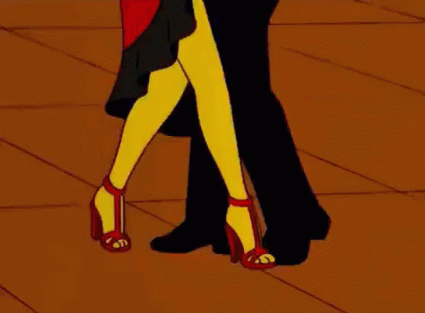
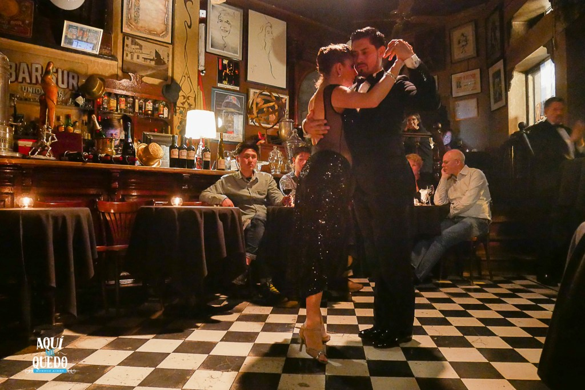

Tango

O tango é um gênero de dança e música tradicional tango é um gênero de dança e música tradicional da Argentina. É considerado um importante símbolo cultural desse país e apresenta enorme carga emocional e dramática.
A dança é feita em pares e para realizá-la é necessário habilidade e expressividade. Isso porque as coreografias possuem certo grau de complexidade e transmitem sensualidade, paixão e tristeza.Além disso, para que uma apresentação seja bem
sucedida, o casal deve ter entrosamento e conexão.
Origem do tango

O tango originou-se no final do século XIX nas margens do Rio da Prata, em Buenos Aires, na Argentina, e em Montevidéu, no Uruguai.Não se sabe ao certo, mas especula-se que o estilo musical seja decorrente da habanera e da milonga, que são
vertentes da música cubana.
Assim, o tango era uma expressão presente dentre a população suburbana e manifestava-se, principalmente, em casas de prostituição, bares e cafés. Os instrumentos musicais utilizados eram o violão, a flauta e o violino.
Outro instrumento importante no tango é o bandoneon, pequeno acordeon. Ele foi elaborado pelo músico Heinrich Band e levado à região do Rio da Prata pelos imigrantes alemães no começo do século XX, aos poucos foi incorporado pela cultura local.
No princípio, a dança era feita por dois homens e eles não se olhavam. Depois, passou a ser interpretada também por mulheres, geralmente prostitutas. Apenas em 1910, com a difusão dessa arte, o passou a ser aceito pela burguesia e a partir
de então, ganhou os salões.